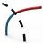
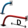

11.2. Modify
Commands to modify entities in the Modify menu:
Modify a line, arc or circle. → | |
Change the parameters of entities. → → | |
 | Delete parts of a selected entity up to the next point of intersection with another entity. → |
 | Shorten or extend a curve via a boundary. → |
Split one or several curves via boundaries or at their NURBS arc joints. → | |
 | Use different modes to extend 2D and 3D curves. → |
 | Modify a transition between two individual curves. → |
Modify a curve using its control points. → | |
 | Convert one or several curves and faces to NURBS. → |
Convert NURBS entities into entities that can be described using analytical geometry. → | |
Simplify faces, boundaries and curves. → | |
Invert the orientation of curves. → | |
Invert the U and V direction of isoparametric curves in faces. → | |
 | Invert the orientation of an individual face or orient all faces in the same direction. → |
 | Trim faces at boundaries and planes. Split faces within solids using curves. → |
 | → Restore the domain as an initial face or selected areas to the state they were in before the face was trimmed. |
→ Modify the length of the faces. | |
→ Split one or several faces along isoparametric curves. | |
 | → Modify the transitions between two individual faces. |
→ Break one or several shapes (solids) completely or partially. | |
 | → Deform entities. |
→ Adapt entities to a target shape. |